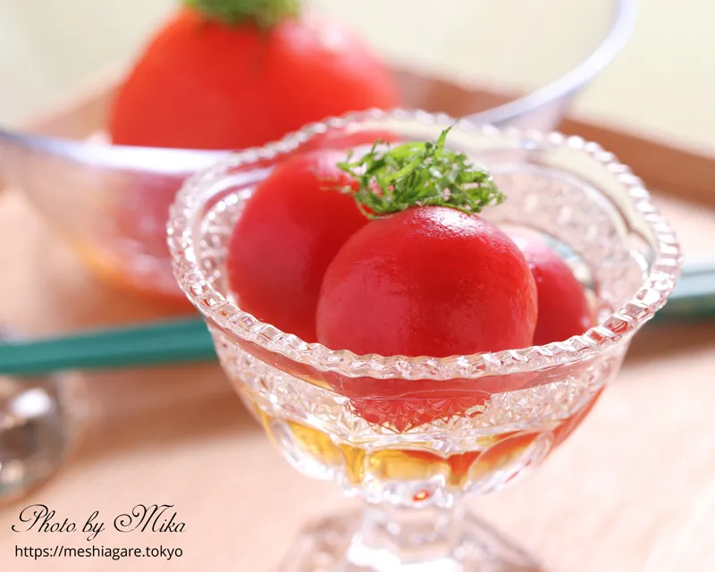

Home
Taiwanese Pickled Tomato
Ingredients
- Water to cover
- 40 ml rice vinegar
- 350 g cherry or rosa tomatoes
- 10 ice cubes
Ingredients for Dressing
3/4 cup of water
10 ml brown sugar
50 g of dried/cured plum
1 cup of rice vinegar
6-8 small and fresh mint leaves or fresh basil
Preperation Time - 30 mins
Instructions
-
Fill a small pot half way with water and 1/3 cup of vinegar and bring to
boil
-
While waiting, score the small tomatoes with a sharp knife, making a plus
(+) score at the side where the stem used to be
- When the water’s boiled, pop the tomatoes in for 1 minute only
- Rinse the tomatoes in cold water and ice immediately
- Drain the water out and let it chill with ice in the fridge
-
In a separate pot, heat 1/3 cup of water, rice vinegar with the brown sugar
and cured plums
-
Simmer for 5-10 minutes, allowing the flavour of the plums to seep into the
water
- Allow the liquid to chill
-
Once chilled, place the tomatoes into the liquid, cover with cling wrap and
place in Fridge to cool
